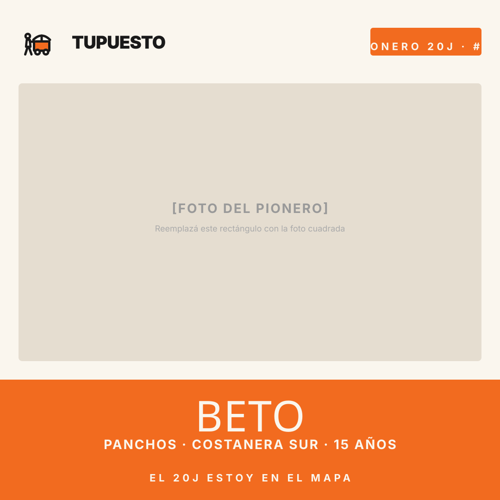
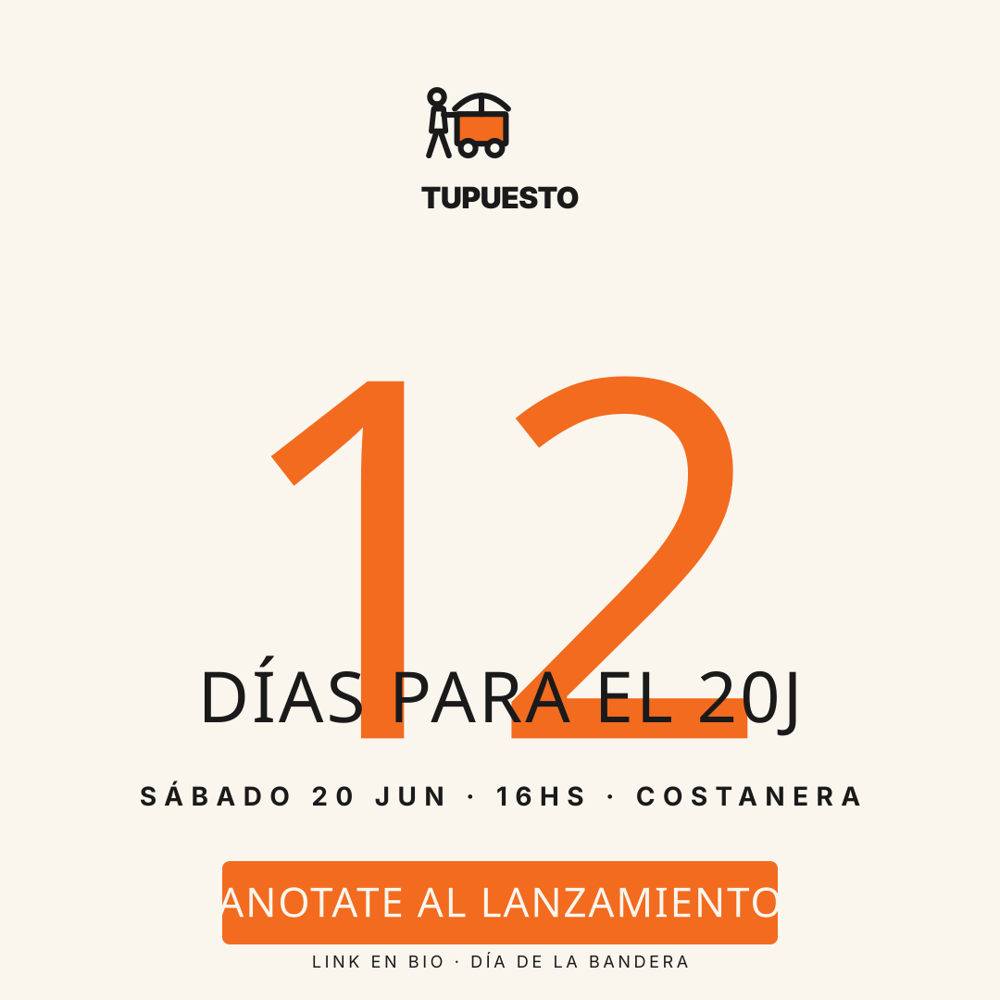
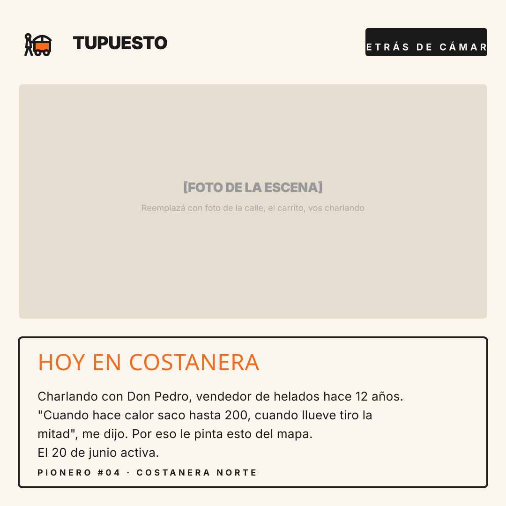
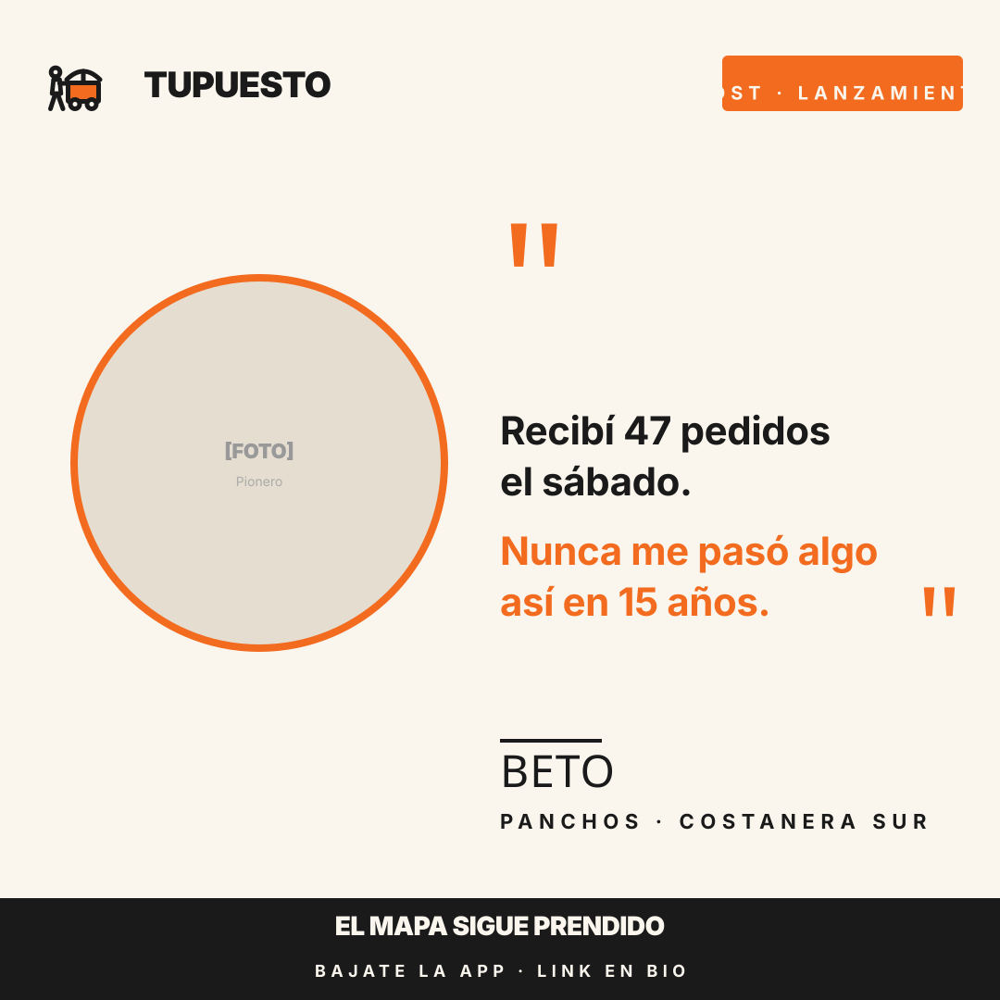

5 plantillas reutilizables · instagram 1080x1080
1. Abrí el archivo .svg en Figma, Illustrator, Inkscape o cualquier editor vectorial (todos tienen versión gratis).
2. Reemplazá los rectángulos grises (placeholders de foto) con la foto real que querés usar.
3. Editá los textos (nombre del pionero, número de días, quote, etc.) directamente.
4. Exportá a PNG o JPG y subí a Instagram.
Nota: los textos usan Anton e Inter (Google Fonts). Si no tenés las fuentes instaladas, Figma las descarga automáticamente cuando abrís el archivo.

Para cada onboarding, presentar al pionero al feed de TuPuesto. Foto del vendedor + nombre + lo que vende + zona + antigüedad.
Usar 6-8 veces (uno por cada pionero)

Posts grandes con el número de días restantes. Para los hitos -30, -14, -7, -2, 0.
5 veces (días -30, -14, -7, -2, 0)

Para posts narrativos del día — charlas en la calle, observaciones, quotes textuales de vendedores que aún no firmaron.
3-5 veces durante el pre-launch
Posts tipográficos sin foto para empujar el waitlist cuando no tenés contenido visual del día. Naranja sólido, alto impacto.
3-4 veces durante el pre-launch

Para semanas 6-7 después del lanzamiento. Foto circular del vendedor + quote textual + atribución. Prueba social fuerte.
5-7 veces post-launch (uno por pionero)
En la sesión de "batching" semanal (recomendada los domingos 2-3hs), abrís estas plantillas, generás los 5-7 posts de la semana siguiente, y los dejás programados en Instagram. No tenés que pensar cada día qué postear.
Herramientas para programar gratis: Meta Business Suite (Instagram + Facebook nativo), Buffer, Later.